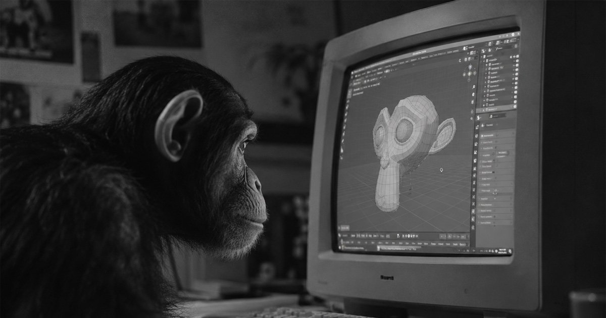
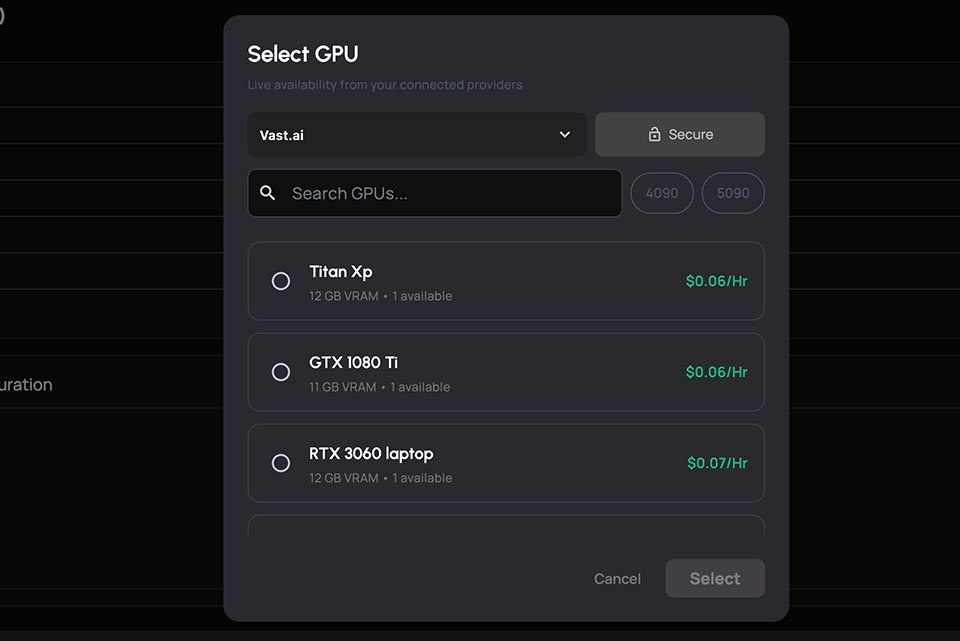
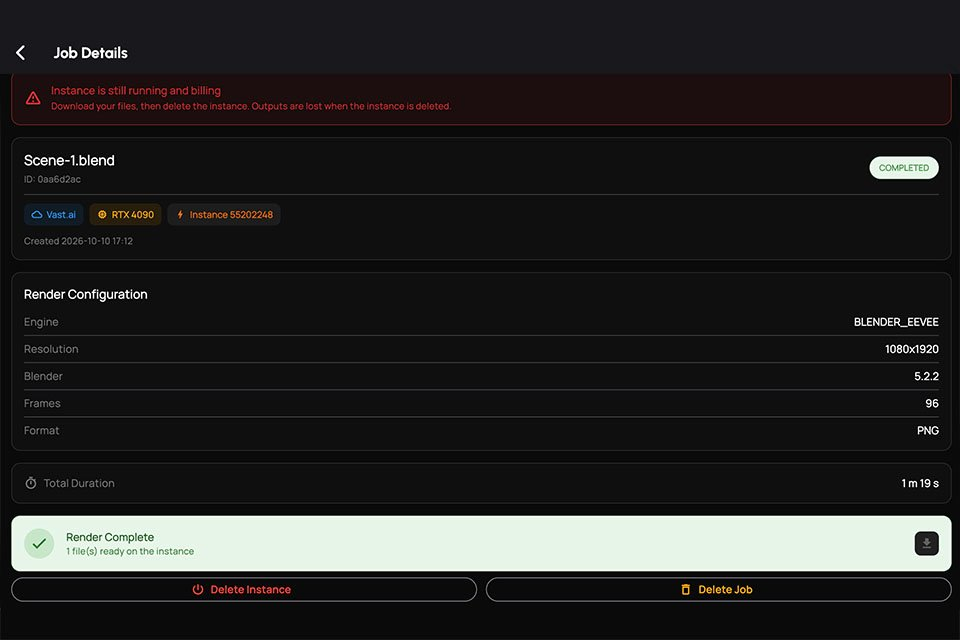
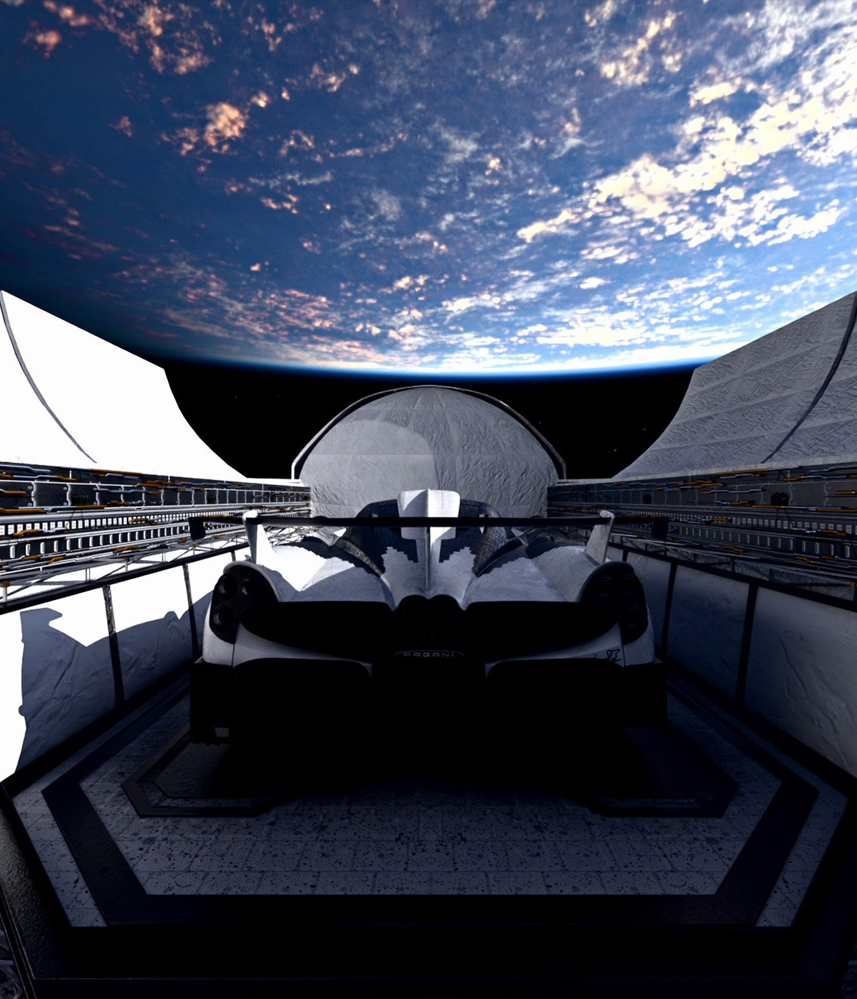
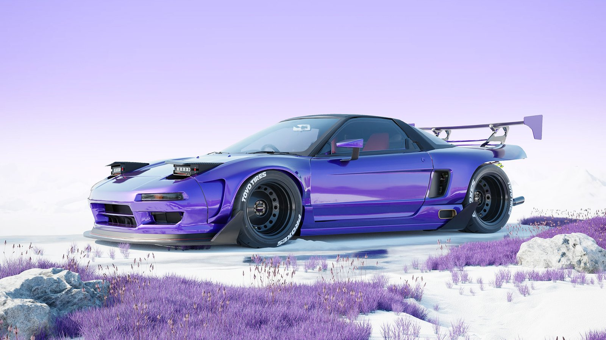

Go Bananas in Blender.

Three steps. Zero setup.

01 Connect

02 Submit

03 Download
Up to
cheaper than a traditional render farm.
120 frames · 4K · Cycles · avg of 5 runs

Rendered with Bananafarm
Rendering should be open.
It's open source.
Never leave Blender.
bananafarm.appFollow @from.daydream
Bananafarm@from.daydream